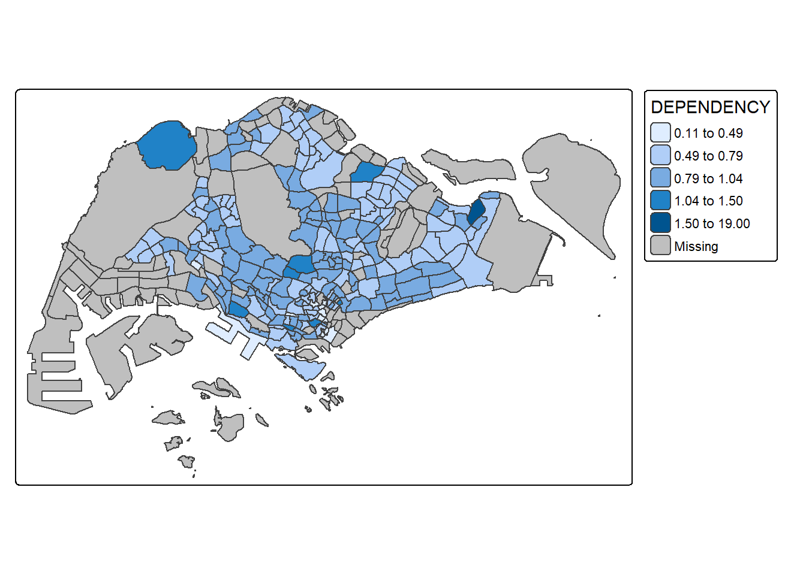

pacman::p_load(sf, tmap, tidyverse)Hands-on Exrcise 8a
Getting Started
Objective of this exercise:
- Plot functional and truthful choropleth maps using tmap
Import Libraries
The libraries used in this exercise would be:
sf: support for simple feature access, standardized way to encode and analyze spatial vector data
tmap: used to draw thematic maps
tidyverse: inclusive of readr. tidyr and dplyr package
The Data
In this exercise, we’ll use the Master [;am 2014 Subzone Boundary (ESRI shapefile format) from dataset data.gov.sg and Singapore Residents by Planning Area/Subzone, Age Group, Sex and Type of Dwelling, June 2011-2020 dataset (csv file) from Department of Statistics, Singapore.
Import Geospatial Data
mpsz <- st_read(dsn = "data/geospatial",
layer = "MP14_SUBZONE_WEB_PL")Reading layer `MP14_SUBZONE_WEB_PL' from data source
`C:\stefanie-fel\ISSS608-VAA\Hands-on_Ex\Hands-on_Ex08\data\geospatial'
using driver `ESRI Shapefile'
Simple feature collection with 323 features and 15 fields
Geometry type: MULTIPOLYGON
Dimension: XY
Bounding box: xmin: 2667.538 ymin: 15748.72 xmax: 56396.44 ymax: 50256.33
Projected CRS: SVY21
Note
- uses the st_read() function from sf library to import the shapefile into R
We’ll examine the content fo the data frame by calling the variable
mpszSimple feature collection with 323 features and 15 fields
Geometry type: MULTIPOLYGON
Dimension: XY
Bounding box: xmin: 2667.538 ymin: 15748.72 xmax: 56396.44 ymax: 50256.33
Projected CRS: SVY21
First 10 features:
OBJECTID SUBZONE_NO SUBZONE_N SUBZONE_C CA_IND PLN_AREA_N
1 1 1 MARINA SOUTH MSSZ01 Y MARINA SOUTH
2 2 1 PEARL'S HILL OTSZ01 Y OUTRAM
3 3 3 BOAT QUAY SRSZ03 Y SINGAPORE RIVER
4 4 8 HENDERSON HILL BMSZ08 N BUKIT MERAH
5 5 3 REDHILL BMSZ03 N BUKIT MERAH
6 6 7 ALEXANDRA HILL BMSZ07 N BUKIT MERAH
7 7 9 BUKIT HO SWEE BMSZ09 N BUKIT MERAH
8 8 2 CLARKE QUAY SRSZ02 Y SINGAPORE RIVER
9 9 13 PASIR PANJANG 1 QTSZ13 N QUEENSTOWN
10 10 7 QUEENSWAY QTSZ07 N QUEENSTOWN
PLN_AREA_C REGION_N REGION_C INC_CRC FMEL_UPD_D X_ADDR
1 MS CENTRAL REGION CR 5ED7EB253F99252E 2014-12-05 31595.84
2 OT CENTRAL REGION CR 8C7149B9EB32EEFC 2014-12-05 28679.06
3 SR CENTRAL REGION CR C35FEFF02B13E0E5 2014-12-05 29654.96
4 BM CENTRAL REGION CR 3775D82C5DDBEFBD 2014-12-05 26782.83
5 BM CENTRAL REGION CR 85D9ABEF0A40678F 2014-12-05 26201.96
6 BM CENTRAL REGION CR 9D286521EF5E3B59 2014-12-05 25358.82
7 BM CENTRAL REGION CR 7839A8577144EFE2 2014-12-05 27680.06
8 SR CENTRAL REGION CR 48661DC0FBA09F7A 2014-12-05 29253.21
9 QT CENTRAL REGION CR 1F721290C421BFAB 2014-12-05 22077.34
10 QT CENTRAL REGION CR 3580D2AFFBEE914C 2014-12-05 24168.31
Y_ADDR SHAPE_Leng SHAPE_Area geometry
1 29220.19 5267.381 1630379.3 MULTIPOLYGON (((31495.56 30...
2 29782.05 3506.107 559816.2 MULTIPOLYGON (((29092.28 30...
3 29974.66 1740.926 160807.5 MULTIPOLYGON (((29932.33 29...
4 29933.77 3313.625 595428.9 MULTIPOLYGON (((27131.28 30...
5 30005.70 2825.594 387429.4 MULTIPOLYGON (((26451.03 30...
6 29991.38 4428.913 1030378.8 MULTIPOLYGON (((25899.7 297...
7 30230.86 3275.312 551732.0 MULTIPOLYGON (((27746.95 30...
8 30222.86 2208.619 290184.7 MULTIPOLYGON (((29351.26 29...
9 29893.78 6571.323 1084792.3 MULTIPOLYGON (((20996.49 30...
10 30104.18 3454.239 631644.3 MULTIPOLYGON (((24472.11 29...Import Attribute Data
popdata <- read_csv("data/aspatial/respopagesextod2011to2020.csv")Data Preparation
We want to prepare the data table with 2020 values. We want the data table to include the following columns: PA, SZ, YOUNG, ECONOMY ACTIVE, AGED, TOTAL DEPENDENCY, where:
YOUNG: age from 0 to 4 - 20 to 24
ECONOMY ACTIVE: age from 25 to 29 - 60 to 64
AGED: age 65 and above
TOTAL: frequency of all age group
DEPENDENCY: ratio between young + aged / economy active group
First, we’ll use pivot_wider to trasnform long data format to wide format, whereas mutate(), filter(), group_by() and select() is used to manipulate and filter data.
popdata2020 <- popdata %>%
filter(Time == 2020) %>%
group_by(PA, SZ, AG) %>%
summarise(`POP` = sum(`Pop`)) %>%
ungroup() %>%
pivot_wider(names_from=AG,
values_from=POP) %>%
mutate(YOUNG = rowSums(.[3:6])
+rowSums(.[12])) %>%
mutate(`ECONOMY ACTIVE` = rowSums(.[7:11])+
rowSums(.[13:15]))%>%
mutate(`AGED`=rowSums(.[16:21])) %>%
mutate(`TOTAL`=rowSums(.[3:21])) %>%
mutate(`DEPENDENCY` = (`YOUNG` + `AGED`)
/`ECONOMY ACTIVE`) %>%
select(`PA`, `SZ`, `YOUNG`,
`ECONOMY ACTIVE`, `AGED`,
`TOTAL`, `DEPENDENCY`)Before performing georelational join, we will convert the values of PA and SZ columns to uppercase, as it is currently in uppercase and lowercase. There will be mismatch in the join if they don’t have the same format.
popdata2020 <- popdata2020 %>%
mutate(across(c(PA, SZ), toupper)) %>%
filter(`ECONOMY ACTIVE` > 0)Next, we use left_join() to join the geographical data and attribute table using SUBZONE_N and SZ as common identifier.
mpsz_pop2020 <- left_join(mpsz, popdata2020,
by = c("SUBZONE_N" = "SZ"))Next, write_rds will be ysed to save the R object into file in binary format (RDS).
write_rds(mpsz_pop2020, "data/rds/mpszpop2020.rds")Choropleth Mapping Geospatial Data with tmap
There are two ways of creating thematic maps with tmap:
Plotting using qtm()
Plotting customization thematic map using tmap elements
Plotting Chropleth Map using qtm()
tmap_mode("plot")
qtm(mpsz_pop2020,
fill = "DEPENDENCY")
What the code does
tmap_mode() with “plot” option will create static map. Interactive mode is created using “view” option
fill argument is used to map the attribute (i.e. DEPENDENCY)
Create Custom Chropleth Map using tmap’s element
We can create custom choropleth map as it gives us more flexibility than qtm(). First, we can use tm_shape and followed by one or more layer element (i.e. tm_fill() and tm_polygons()).
tm_shape(mpsz_pop2020) +
tm_polygons()
Next, we can show geographical distribution of selected variable by planning subzone in the choropleth map by assigning Dependency to tm_ploygons().
tm_shape(mpsz_pop2020)+
tm_polygons("DEPENDENCY")
Important points
The default interval binning useed to draw choropleth map is called “pretty”
By default, missing values will be shaded in grey
The default color scheme is Y1OrRd
We can also draw the choropleth map using tm_fill alone, but the difference from tm_polygons() is that it combines tm_fill and tm_border(). In this example, we’ll use tm_fill to graph the choropleth map.
tm_shape(mpsz_pop2020)+
tm_fill("DEPENDENCY")
If we use tm_polygons(), we can also control the border by using the tm_borders().
tm_shape(mpsz_pop2020)+
tm_polygons(fill = "DEPENDENCY") +
tm_borders(lwd = 0.01,
fill_alpha = 0.1)
What the code does
alpha argument is sued to define transparency (between 0, which is totally transparent and 1, which is not transparent).
col define border color
lwd defines the line width (default is 1)
lty defines border line type (default is “solid”)
Next, we’ll add data classification method using tmap. The function has a few data classification method: fixed, sd, equal, pretty (default), quantile, kmeans, hclust, bclust, fisher, and jenks. In this example, we use quantile data classification with 5 classes (added into fill.scale of the tm_polygons function).
tm_shape(mpsz_pop2020)+
tm_polygons("DEPENDENCY",
fill.scale = tm_scale_intervals(
style = "jenks",
n = 5)) +
tm_borders(fill_alpha = 0.5)
Here, we’ll use the equal data classification.
tm_shape(mpsz_pop2020)+
tm_polygons("DEPENDENCY",
fill.scale = tm_scale_intervals(
style = "equal",
n = 5)) +
tm_borders(fill_alpha = 0.5)
As we can see, depending on which data classification method used, we can arrive at different looking graphs.
We can experiment with different number of classes. In this example, we’ll use 2 classes
tm_shape(mpsz_pop2020)+
tm_polygons("DEPENDENCY",
fill.scale = tm_scale_intervals(
style = "equal",
n = 2)) +
tm_borders(fill_alpha = 0.5)
Whereas, a 6 classes will look like this
tm_shape(mpsz_pop2020)+
tm_polygons("DEPENDENCY",
fill.scale = tm_scale_intervals(
style = "equal",
n = 6)) +
tm_borders(fill_alpha = 0.5)
A 20 classes look like below
tm_shape(mpsz_pop2020)+
tm_polygons("DEPENDENCY",
fill.scale = tm_scale_intervals(
style = "equal",
n = 20)) +
tm_borders(fill_alpha = 0.5)
Plot Choropleth Map with Custome Break
For all built-in styles, category breaks are computed internally, but we can override the default by setting breakpoints (breaks argument in tm_fill()). They also need to include maximum and minimum, this means that in order to end up with n categories, n+1 elements must be specified in the breaks option (the values must be in increasing order). But first, let’s check the descriptive statistics of dependency column.
summary(mpsz_pop2020$DEPENDENCY) Min. 1st Qu. Median Mean 3rd Qu. Max. NA's
0.1111 0.7147 0.7867 0.8585 0.8763 19.0000 92 Next, we’ll set the break point at 0.6, 0.7, 0.8 and 0.9. and the minimum at 0 and maximum at 100.
tm_shape(mpsz_pop2020)+
tm_polygons("DEPENDENCY",
breaks = c(0, 0.60, 0.70, 0.80, 0.90, 1.00)) +
tm_borders(fill_alpha = 0.5)
Color Scheme
Color scheme in tmap uses RColorBrewer package, but we can change the color using tm_scale_intervals() function in which we can assign preferred color to values argument of the function.
tm_shape(mpsz_pop2020)+
tm_polygons("DEPENDENCY",
fill.scale = tm_scale_intervals(
style = "quantile",
n = 5,
values = "brewer.greens")) +
tm_borders(fill_alpha = 0.5)
We can reverse the color shading by adding “-” in values:
tm_shape(mpsz_pop2020)+
tm_polygons("DEPENDENCY",
fill.scale = tm_scale_intervals(
style = "quantile",
n = 5,
values = "-brewer.greens")) +
tm_borders(fill_alpha = 0.5)
Map Layouts
Map layouts refers to the combination of all map elements (i.e. objects to be mapped, title, scale bar, compass, margin and aspects ratio).
Map Legend
tm_legend() options are provided to change placement, format and appearance of the legend.
tm_shape(mpsz_pop2020)+
tm_polygons("DEPENDENCY",
fill.scale = tm_scale_intervals(
style = "jenks",
n = 5,
values = "brewer.greens"),
fill.legend = tm_legend(
title = "Dependency ratio")) +
tm_borders(fill_alpha = 0.5) +
tm_title("Distribution of Dependency Ratio by planning subzone \n(Jenks classification)")
Map Style
tmap_style() is used to change the layout of graph (similar to theme in ggplot2). In this example, we’ll change the choropleth map to a “classic” style.
tm_shape(mpsz_pop2020)+
tm_fill("DEPENDENCY",
style = "quantile",
palette = "-Greens") +
tm_borders(alpha = 0.5) +
tmap_style("classic")
Cartographic Furniture
tmap also provide argument to draw other map furniture (i.e. compass, scale bar and grid line) by using tm_compass(), tm_scale_bar() and tm_grid() respectively.
tm_shape(mpsz_pop2020)+
tm_polygons(fill = "DEPENDENCY",
fill.scale = tm_scale_intervals(
style = "quantile",
n = 5,
values = "brewer.blues"),
fill.legend = tm_legend(
title = "Dependency ratio")) +
tm_title("Distribution of Dependency Ratio by planning subzone") +
tm_layout(frame = TRUE) +
tm_borders(fill_alpha = 0.5) +
tm_compass(type="8star", size = 2) +
tm_grid(alpha =0.2) +
tm_credits("Source: Planning Sub-zone boundary from Urban Redevelopment Authorithy (URA)\n and Population data from Department of Statistics DOS",
position = c("left", "bottom"))
Graphing Multiple Choropleth Maps
We can create small multiple maps in tmap by using:
Assigning multiple values to at least one of aesthetic arguments
Defining group-by variable in tm_facets()
Creating multiple stand-alone maps with tmap_arrange()
Method #1: Assigning multiple values to at least one of aesthetic arguments
Using ncols in tm_fill() can be used to draw multiple choropleth maps
tm_shape(mpsz_pop2020)+
tm_fill(c("YOUNG", "AGED"),
style = "equal",
palette = "Blues") +
tm_layout(legend.position = c("right", "bottom")) +
tm_borders(alpha = 0.5) +
tmap_style("white")
In this example, small multiple choropleth maps are created by assigning multiple values to at least one of the aesthetic arguments
tm_shape(mpsz_pop2020)+
tm_polygons(c("DEPENDENCY","AGED"),
style = c("equal", "quantile"),
palette = list("Blues","Greens")) +
tm_layout(legend.position = c("right", "bottom"))
Method #2: Defining group-by variable in tm_facets()
Multiple small choropleth maps can be created using tm_facets()
tm_shape(mpsz_pop2020) +
tm_fill("DEPENDENCY",
style = "quantile",
palette = "Blues",
thres.poly = 0) +
tm_facets(by="REGION_N",
free.coords=TRUE) +
tm_layout(legend.show = FALSE,
title.position = c("center", "center"),
title.size = 20) +
tm_borders(alpha = 0.5)
Method #3: Creating multiple stand-alone maps with tmap_arrange()
We can create multiple multiple stand-alone maps using tmap_arrange() to create small chropleth maps.
youngmap <- tm_shape(mpsz_pop2020)+
tm_polygons("YOUNG",
style = "quantile",
palette = "Blues")
agedmap <- tm_shape(mpsz_pop2020)+
tm_polygons("AGED",
style = "quantile",
palette = "Blues")
tmap_arrange(youngmap, agedmap, asp=1, ncol=2)
Mapping Spatial Object Meeting a Selection Criterion
Instead of creating multiple small choropleth map like above, we can also use selection function to map spatial object meeting the selection criterion.
tm_shape(mpsz_pop2020[mpsz_pop2020$REGION_N=="CENTRAL REGION", ])+
tm_fill("DEPENDENCY",
style = "quantile",
palette = "Blues",
legend.hist = TRUE,
legend.is.portrait = TRUE,
legend.hist.z = 0.1) +
tm_layout(legend.outside = TRUE,
legend.height = 0.45,
legend.width = 5.0,
legend.position = c("right", "bottom"),
frame = FALSE) +
tm_borders(alpha = 0.5)